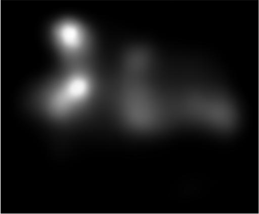
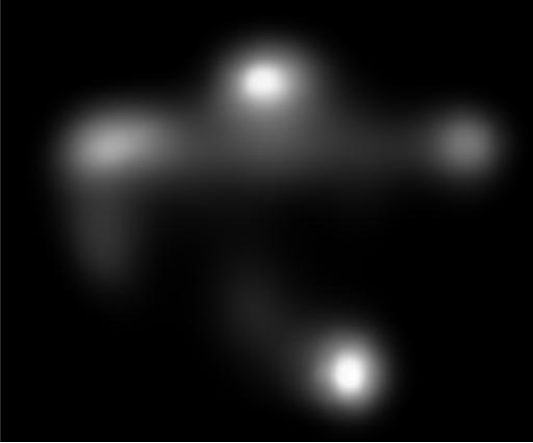
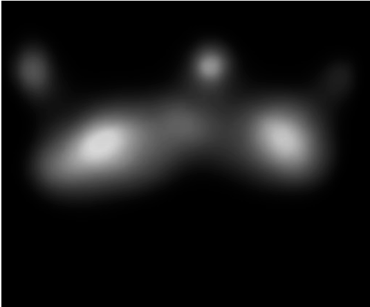
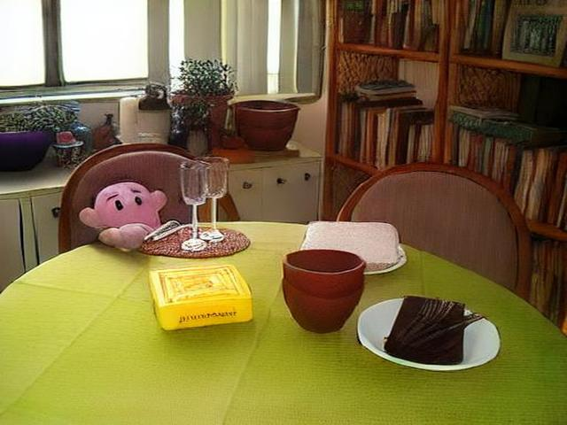
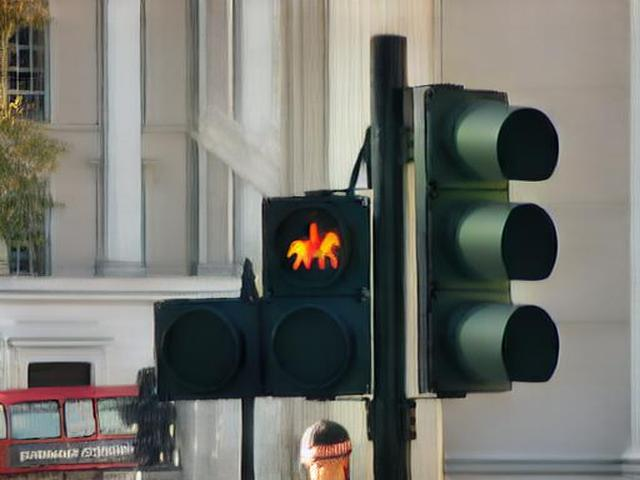
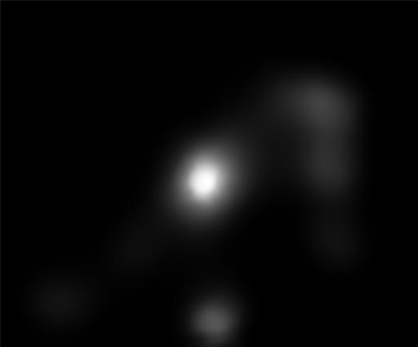
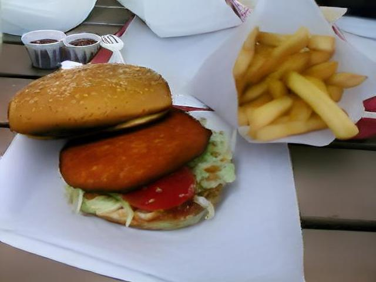
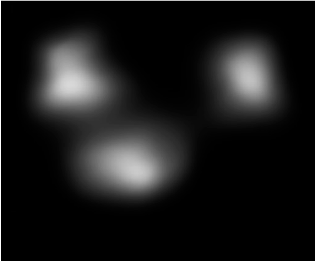

Data Augmentation via Latent Diffusion for Saliency Prediction
Interactive Visualization
Anonymous authors ECCV 2024 Submission - Paper ID: 10071
Saliency prediction models are constrained by the limited diversity and quantity of labeled data. Standard data augmentation techniques such as rotating, and cropping change the scene composition hence affecting saliency. In this work, we propose a novel data augmentation method for deep saliency prediction that involves editing natural images while retaining the complexity and variability of real-world visual scenes. Since saliency depends on both high-level and low-level features such as semantics and photometric properties, our approach involves learning both by incorporating photometric and semantic attributes such as color, contrast, brightness, and class. To that end, we introduce a saliency-guided cross-attention mechanism that enables targeted edits on the photometric properties, thereby enhancing saliency within specific image regions and providing controllability to our model in the context of saliency prediction. Our saliency predictions are highly aligned with human visual attention patterns in the edited images, as validated by a user study.
TL;DR We use latent diffusion to augment data for saliency prediction. We show our method improves the performance of existing saliency models. Moreover, we learn multilevel features that improve saliency prediction.
Augmentation
We provide an overview of our augmentation method below.
Using our method, we amplify the contrast of the giraffe in the original image. We also enhance the brightness as another type of augmentation. Our model can constrain excessively strong edits to prevent unnatural results.
Augmentations
Saliency Guided Cross-Attention Mechanism
We use a saliency guided cross-attention mechanism to localize the region that we aim to edit.
We extract cross-attention features from the input image and prompt, then multiply them with the initial saliency to create spatial attention maps. Each word generates a spatial attention map, and we select the one with the highest sum as the target editing region . These selected spatial maps are shown in Figure-4 in the main paper. We utilize prompts from the MS-COCO dataset and modify them as described in Section 3.5 during editing. We use the target region to edit and the edited image pairs to train the models with augmentation which we explain in the following section.
Saliency Guided Cross-Attention Mechanism
Training with Augmentations
We show how we train the saliency prediction models with our augmented images.
Given an image, saliency ground-truth and the target region to edit, we generate the image edits using our augmentation method. Then, we predict saliency for the original and the edited images respectively. Since our edits enhance saliency in the edited regions, we calculate the Binary Cross Entropy (BCE) between the saliency predictions of the original and edited images. That is, we penalize the models if they underestimate the saliency of the edited regions. We validate that our editing method enhances the saliency in the edited regions by a user study.
Training with Augmentations
Saliency is influenced by contrast[3], brightness[2], and color[4][5] as evidenced by cognitive studies on human visual attention[1]. We focus on photometric edits that enhance the saliency of the most salient region that corresponds to a word from the prompt. We provide two examples for each edit in the following sections. Please use the sliders on the right to see the generated image edits and their saliency maps. We refer to the supplementary material for the comparison with the baselines.
Contrast
We show the edited images at different intensity levels for enhancing contrast on the left and their corresponding saliency predictions on the right.
Using our method, we amplify the contrast of the object that man is holding in the image below. Observe the shift in saliency towards the region with high contrast. Our model is able to enhance and thus, control the saliency of the edited region.
Image with edited contrast

Our predictions
Please use the slider to visualize the changes in the saliency based on the photometric changes in the image.
Contrast
We show the edited images at different intensity levels for enhancing contrast on the left and their corresponding saliency predictions on the right.
Using our method, we can amplify the contrast of the dog in the image below. Although the items on the desk remain salient, the dog gathers more attention as the edit intensity increases. Our model is able to control the saliency prediction over the edited region.
Image with edited contrast

Our predictions
Please use the slider to visualize the changes in the saliency based on the photometric changes in the image.
Brightness
We show the edited images at different intensity levels for enhancing brightness on the left and their corresponding saliency predictions on the right.
We enhance the brightness of the cat in the image below. Note that, the attention shifts towards the brighter regions which aligns with our edited regions. Our model is able to predict the saliency in a controllable and interpretable manner by following the brightness change towards the rear end of the cat.
Image with edited brightness
Our predictions
Please use the slider to visualize the changes in the saliency based on the photometric changes in the image.
Brightness
We show the edited images at different intensity levels for enhancing brightness on the left and their corresponding saliency predictions on the right.
We amplify the brightness of the pizzas in the image below. Although the pizzas remain salient, we show the saliency of the bottle on the left and the glass in the middle decrease.
Image with edited brightness

Our predictions
Please use the slider to visualize the changes in the saliency based on the photometric changes in the image.
Color
We show the edited images at different intensity levels for changing the color of the selected region to pink on the left and their corresponding saliency predictions on the right.
Using our method, we change the color of the toy sitting on the chair in the image below. The attention on the face of the toy increases according to the intensity of the color edit.

Image with edited color
Our predictions
Please use the slider to visualize the changes in the saliency based on the photometric changes in the image.
Color
We show the edited images at different intensity levels for changing the color of the selected region to green on the left and their corresponding saliency predictions on the right.
Here, we change the color of traffic light to green in the image below. Observe that, the saliency disperses towards the edited region. As the color intensifies, our odel is able to enhance the saliency prediction within these color-edited regions.

Image with edited color

Our predictions
Please use the slider to visualize the changes in the saliency based on the photometric changes in the image.
Applications of our method
We show the edited images at different intensity levels for enhancing contrast of the selected region on the left and their corresponding saliency predictions on the right.
We show a practical application of our model in the field of advertising, particularly in enhancing the visual appeal of products in the image below. Consider an advertisement featuring a hamburger alongside fries. Using our model, we can selectively increase the contrast on the hamburger, drawing more attention to the edited region. Assessing the saliency of such generated image edits in capturing viewer visual attention would require user studies which are costly and time-consuming. However, our method simultaneously produces the saliency map as we generate the image edit. This immediate feedback allows advertisers to fine-tune their image edits in real-time, ensuring that the focal product, like the hamburger in this scenario, stands out from other elements, such as the fries. Hence, we enable advertisers to make human visual attention-driven decisions about visual edits, optimizing the impact of their advertisements without the need for time-consuming user studies. This not only streamlines the process of creating visually compelling advertisements but also enhances the likelihood of capturing and retaining consumer attention.

Image with edited contrast

Our predictions
Please use the slider to visualize the changes in the saliency based on the photometric changes in the image.
References
Wolfe, J., Horowitz, T., What attributes guide the deployment of visual attention and how do they do it?, Nature Reviews Neuroscience, 5, 2004.
Ochiai, N., & Sato, M. , Effects of Surrounding Brightness on Visual Search for Safety Colors. Color Research and Application, 30(6), 2005.
Pashler, H., Dobkins, K. & Huang L., Is contrast just another feature for visual selective attention?, Vision Research, 44(12), 2004.
Nagy, A. L. & Sanchez, R. R. Critical color differences determined with a visual search task, Journal of the Optical Society of America, 1990.
Bauer, B., Jolicoeur, P. & Cowan, W. B. Visual search for colour targets that are or are not linearly-separable from distractors. Vision Research, 1996.